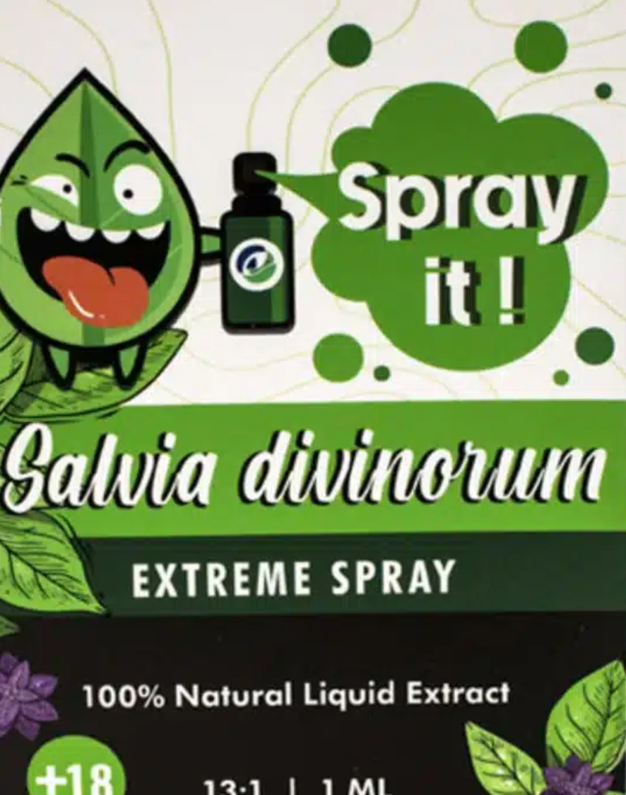
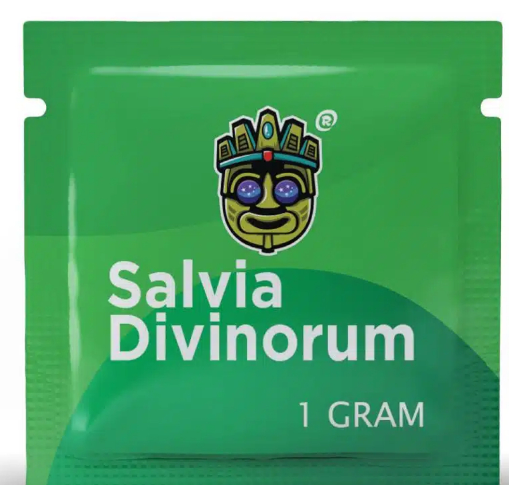
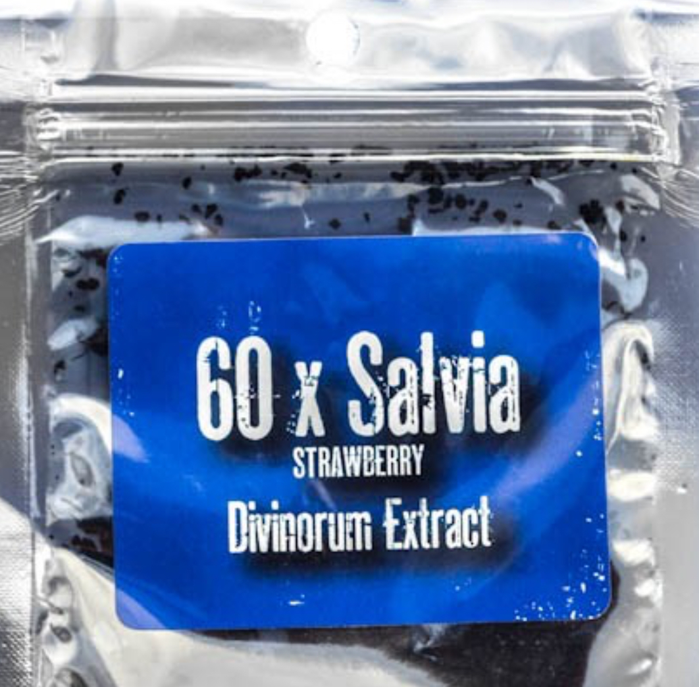
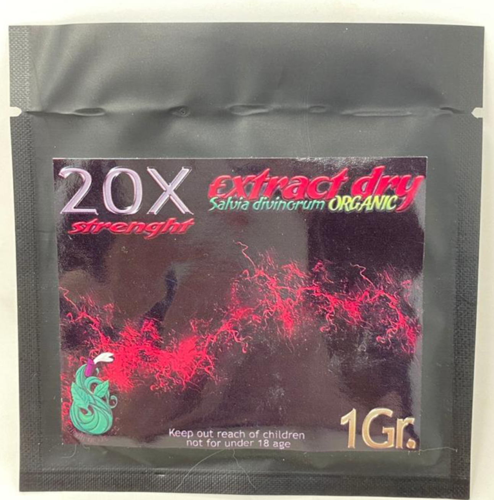

Sold under names like Diviner’s Sage, Magic Mint, and Sally-D, salvia divinorum is a powerful dissociative hallucinogen sometimes marketed as a “natural” product. Despite the branding, it can cause intense, short-lived hallucinations and loss of control.
A potent dissociative hallucinogen. Salvinorin A is among the most powerful naturally occurring hallucinogens. It primarily activates kappa-opioid receptors—linked to detachment, dysphoria, and hallucination—rather than serotonin like LSD or psilocybin.1–3
Brief but intense effects. When smoked or vaporized, onset occurs within seconds and typically lasts 5–10 minutes. Effects include loss of coordination, uncontrollable laughter or panic, dizziness, and dissociation; teens are sometimes seen collapsing or behaving dangerously during disorientation.4–5
Not a safe “legal high.” Sudden, vivid hallucinations can trigger risky behavior—running into traffic, falling, or self-harm. EDs report head injuries, psychosis, and prolonged anxiety or depression after use.6
State bans expanding. While not federally scheduled, many states (e.g., FL, DE, NC, LA) have banned or restricted it; others limit sales to adults or treat it as an analogue. Check local regulations.7
Not FDA-evaluated or approved. There is no recognized safe or medical use. Any “herbal hallucinogen” sold for consumption is unregulated and potentially contaminated; it is not a dietary supplement.8




See also: Kratom • Tianeptine • Phenibut • THC Extracts
What to watch for. Packets or vials labeled Diviner’s Sage, Magic Mint, or Sally-D, sold as “incense,” “smoking blend,” or “spiritual enhancer.” Signs include laughter/tears without reason, glassy eyes, sudden fear, confusion, or reports of “visions.”
Where it’s sold. Smoke shops, gas stations, and online vendors. Products appear as dried leaves or concentrated extracts (“20x,” “40x,” etc.) intended for smoking or vaping.
If someone is disoriented or hallucinating. Move them to a safe place. Do not restrain unless necessary for safety. Call 911 if they’re confused, unresponsive, or endangering themselves. For guidance, call Poison Control: 1-800-222-1222.
How to talk about it. “Salvia isn’t harmless just because it’s sold as an herb. It can make you lose touch with reality. Let’s read what doctors and health experts say about its dangers.”
Myth: “It’s legal, so it must be safe.”
Fact: Legal status ≠ safety. Many dangerous drugs were once legal. Salvia has no approved medical use and is banned in many states.7
Myth: “It’s natural, so it’s mild.”
Fact: Salvinorin A is extremely potent by weight. A single hit can cause complete loss of control and intense hallucinations.1–3
Myth: “It’s not addictive.”
Fact: While physical dependence isn’t typical, salvia can foster repeated dissociative use and psychological cravings in vulnerable users.6